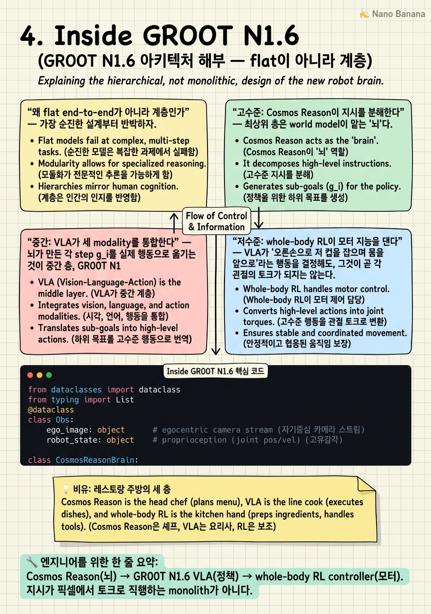

Inside GR00T N1.6

🎯 학습 목표
- GR00T N1.6의 3층 아키텍처를 각 층의 입출력과 함께 그릴 수 있다
- reasoning VLA가 순수 end-to-end와 어떻게 다른지 설명할 수 있다
- Cosmos Reason이 high-level instruction을 stepwise plan으로 분해하는 역할을 안다
- whole-body RL controller와 VLA policy의 coordination 관계를 안다
- 이 계층 구조가 왜 '데이터 때려넣기'가 아닌지 논증할 수 있다
이 코스의 중심 질문은 'GR00T가 데이터로 navigation과 manipulation을 통째로 흡수하는가'였다. 앞 챕터에서 우리는 VLA가 로봇 generalist의 기본 문법이 됐음을 봤고, 자연스럽게 다음 유혹에 도달한다 — 그렇다면 '더 큰 VLA + 더 많은 데이터'로 모든 것을 한 덩어리 end-to-end 네트워크에 밀어넣으면 되지 않는가? 이 챕터는 GR00T N1.6의 실제 내부를 열어 그 유혹이 틀렸음을 보인다. GR00T N1.6은 지시가 픽셀에서 모터 토크로 직행하는 flat monolith가 아니라, 역할이 분리된 3층(layered) 구조다.
세 층은 위에서 아래로 이렇게 쌓인다. (1) 고수준 뇌 — NVIDIA Cosmos Reason 같은 world model이 자연어 지시를 장면 이해에 근거한 단계별 계획으로 분해한다. (2) 중간 정책 — GR00T N1.6 VLA가 egocentric 카메라 스트림, 로봇 상태, 자연어 지시를 하나의 unified policy representation으로 통합해, 분해된 각 step을 실행 가능한 행동으로 옮긴다. (3) 저수준 모터 — 시뮬레이션에서 학습한 whole-body RL controller가 locomotion·manipulation·multi-contact를 아우르는 dynamically stable한 motion primitive를 생성해 실제 관절을 움직인다. 이 세 층이 각자 다른 시간 스케일(계획은 초~분, 정책은 수백 ms, 제어는 kHz)과 다른 표현(언어 plan, action token, joint target)으로 동작한다.
'reasoning VLA'라는 이름의 핵심이 바로 이 계층성이다. reasoning이 붙는 이유는 지시가 곧바로 모터로 흘러가는 대신, world-model 기반 planning 층을 한 번 거쳐 '왜·무엇을·어떤 순서로'가 분해된 뒤에야 VLA가 실행하기 때문이다. 이것이 왜 GR00T가 '데이터 때려넣기(pure data scaling)'가 아닌지에 대한 이 코스의 핵심 논거다. 계층 경계마다 서로 다른 supervision(world model은 video·reasoning, VLA는 demonstration, controller는 RL reward)이 들어가고, 각 층은 독립적으로 개선·교체될 수 있다. 이 챕터는 세 층의 입출력을 하나씩 해부하고, 세 verbatim 원문 인용을 각 층 설명에 배치하며, 마지막에 이 하이브리드 설계가 flat scaling과 무엇이 다른지 논증한다.
핵심 내용
왜 flat end-to-end가 아니라 계층인가
가장 순진한 설계부터 반박하자. Flat end-to-end VLA는 관찰 o(픽셀 + 로봇 상태)와 지시 ℓ을 받아 하나의 거대한 신경망 π로 행동 a를 뱉는다: a = π(o, ℓ). 지시에서 토크까지 단 하나의 미분 가능한 함수다. 매력적이다 — 표현이 통일되고, 데이터만 있으면 gradient descent가 모든 층을 알아서 배운다.
그런데 이 flat 설계는 세 가지 구조적 문제에 부딪힌다.
첫째, 시간 스케일의 충돌이다. '커피를 만들어라'는 지시는 수십 초~수 분에 걸친 계획이 필요하고, 그 안의 '컵을 잡아라'는 수백 ms의 정책 결정이며, 관절 안정화는 1 kHz 제어 루프다. 세 스케일(계획 ~0.1 Hz, 정책 ~5-10 Hz, 제어 ~1000 Hz)을 하나의 forward pass가 동시에 담당하면, 느린 계획을 위해 큰 모델을 매 kHz마다 돌리거나, 빠른 제어를 위해 계획을 희생해야 한다. 어느 쪽도 성립하지 않는다.
둘째, credit assignment의 지옥이다. Flat 망에서 로봇이 작업에 실패하면 gradient가 '계획이 틀렸나, 인식이 틀렸나, 모터가 불안정했나'를 한 덩어리 loss로 뭉뚱그린다. 긴 horizon에서 이 신용 할당은 사실상 풀리지 않는다.
셋째, supervision 소스의 이질성이다. 고수준 추론에 좋은 데이터(인터넷 video, reasoning trace)와 저수준 안정화에 좋은 데이터(시뮬 RL rollout)는 종류·양·수집 방식이 완전히 다르다. Flat 망은 이 둘을 하나의 loss로 섞어야 하지만, 계층 구조는 각 층에 맞는 supervision을 따로 먹인다.
GR00T N1.6의 대답은 이 세 문제를 경계를 그어 분리하는 것이다. 각 층은 자기 시간 스케일에서, 자기에게 맞는 표현으로, 자기에게 맞는 supervision으로 학습·동작한다. 층 사이의 인터페이스(뇌 → 정책은 'stepwise plan', 정책 → 모터는 'motion primitive를 지시하는 행동')는 좁고 명시적이다. 이 좁은 인터페이스가 바로 modularity의 원천이다 — world model을 Cosmos Reason에서 다른 것으로 갈아끼워도 VLA는 그대로 쓸 수 있고, controller를 새 로봇 body에 맞게 재학습해도 상위 두 층은 유지된다. Flat 망에서는 어느 것도 불가능하다.
고수준: Cosmos Reason이 지시를 분해한다
최상위 층은 world model이 맡는 '뇌'다. 사용자가 주는 지시는 대개 추상적이고 시간적으로 길다 — '식탁을 치워라', '저 상자를 선반으로 옮겨라'. 이 한 문장은 곧바로 모터 명령으로 번역될 수 없다. 장면을 이해하고, 하위 목표로 쪼개고, 순서를 정해야 한다. 그 일을 하는 것이 world model이다.
The model uses world models, such as NVIDIA Cosmos Reason, to decompose high-level instructions into stepwise action plans grounded in scene understanding to perform real-world tasks.
원문을 풀면 이렇다. GR00T N1.6은 NVIDIA Cosmos Reason 같은 world model을 사용해, 고수준 지시를 장면 이해에 근거한(grounded in scene understanding) 단계별 행동 계획으로 분해한다. 두 핵심어에 주목하자. 'decompose'는 하나의 긴 지시를 순서 있는 하위 step들로 쪼갠다는 뜻이고, 'grounded in scene understanding'은 그 계획이 허공의 언어가 아니라 지금 카메라에 보이는 실제 장면(어떤 물체가 어디 있는가)에 묶여 있다는 뜻이다.
입출력으로 정리하면 — 입력: 자연어 지시 ℓ + 현재 장면 관찰(egocentric 이미지). 출력: 순서 있는 stepwise plan [g₁, g₂, …, g_K]. 예를 들어 '식탁을 치워라'는 [접시를 집어라 → 싱크대로 이동하라 → 접시를 놓아라 → 컵을 집어라 → …]로 분해된다. 각 g_i는 그 자체로는 아직 모터 명령이 아니라, 아래 VLA 층이 실행할 수 있는 크기의 하위 목표(subgoal)다.
왜 이 층이 별도로 있어야 하는가? world model은 미래를 예측·상상하는 능력(장면이 이렇게 바뀌면 다음에 무엇이 필요한가)을 갖기 때문에, 단순한 반응형 정책이 할 수 없는 긴 horizon 계획과 재계획을 한다. 접시를 놓다 컵이 쓰러지면, 뇌는 장면 변화를 인식하고 plan을 수정한다. 이 층은 느리게(계획 단위, 수 초~분) 돌아도 되고 — 그래서 큰 world model을 매 제어 스텝마다 돌리는 낭비 없이 필요할 때만 호출한다. 이 층은 Ch 5에서 Cosmos WFM/Reason으로 더 깊이 파고든다. 여기서 붙잡을 한 문장: 뇌는 '무엇을 어떤 순서로'를 정하되 '어떻게 관절을 움직일지'는 정하지 않는다.
중간: VLA가 세 modality를 통합한다
뇌가 만든 각 step g_i를 실제 행동으로 옮기는 것이 중간 층, GR00T N1.6 VLA다. 이 층이 '정책(policy)'이다 — 관찰을 받아 행동을 출력하는 함수. 그런데 이 정책의 특별함은 세 가지 이질적 입력을 하나의 표현으로 묶는다는 데 있다.
GR00T N1.6 [is] a multimodal vision-language-action (VLA) model that integrates visual observations from egocentric camera streams, robot states, and natural language instructions into a unified policy representation.
원문을 풀면 — GR00T N1.6은 (1) egocentric 카메라 스트림의 시각 관찰, (2) 로봇 상태(관절 각도·속도 등 proprioception), (3) 자연어 지시, 이 셋을 하나의 unified policy representation(통합 정책 표현)으로 통합하는 multimodal VLA 모델이다. 세 modality가 각각 다른 인코더를 거쳐 공통 latent 공간으로 들어가고, 그 위에서 행동이 디코딩된다.
입출력으로 정리하면 — 입력: 현재 관찰 o (egocentric 이미지 + robot state) + 위층이 준 현재 step g_i(자연어 형태의 subgoal). 출력: 행동 a (다음 저수준 층이 소화할 수 있는 명령, 즉 어떤 motion primitive를 어떤 파라미터로 부를지 또는 end-effector/base target). 여기서 자연어 지시가 두 번 쓰인다는 점이 중요하다. 원래 사용자 지시가 아니라, 뇌가 분해해 넘긴 좁은 step이 이 VLA의 language 입력이 된다. 그래서 VLA는 '식탁을 치워라'라는 모호한 전체가 아니라 '지금은 접시를 집어라'라는 실행 가능한 조각만 상대한다 — 이것이 flat 망 대비 VLA의 부담을 극적으로 줄인다.
세 modality를 왜 통합해야 하는가? 시각만으로는 로봇 자신의 팔이 지금 어디 있는지(state) 알기 어렵고, 상태만으로는 무엇을 잡아야 하는지(vision) 모르며, 둘만으로는 무엇을 하라는지(language) 알 수 없다. loco-manipulation처럼 이동과 조작이 얽힌 과제에서는 특히, base가 움직이는 동안 팔의 목표를 유지해야 하므로 세 신호가 한 표현 안에서 함께 추론돼야 한다. 이 층은 Ch 3에서 다룬 VLA 계보(RT-2 → OpenVLA → π0)의 정통 후계이며, GR00T N1의 unified policy representation은 그 문법의 성숙형이다. 붙잡을 한 문장: VLA는 '무엇을 어떤 순서로'는 위에서 받고, '어떤 관절 궤적으로'는 아래에 위임한 채, 그 사이의 '지금 이 step을 어떤 행동으로'만 책임진다.
저수준: whole-body RL이 모터 지능을 댄다
VLA가 '오른손으로 저 컵을 잡으며 몸을 앞으로'라는 행동을 결정해도, 그것이 곧 각 관절의 토크가 되지는 않는다. 휴머노이드는 수십 자유도의 부정정(under-actuated)·불안정 시스템이라, 팔을 뻗는 순간 무게중심이 흔들려 넘어질 수 있다. 이 물리적 안정화와 정밀한 모터 조율을 맡는 것이 최하위 층, 시뮬레이션에서 RL로 학습된 whole-body controller다.
Whole-body RL training in simulation provides the low-level motor intelligence that GR00T N1.6 uses and coordinates through its higher-level VLA policy.
원문을 풀면 — 시뮬레이션에서의 whole-body RL 학습이 low-level motor intelligence(저수준 모터 지능)를 제공하고, GR00T N1.6은 이를 사용하되 자신의 상위 VLA 정책을 통해 조율(coordinate)한다. 즉 모터 지능은 controller가 갖고, VLA는 그것을 지휘한다. 이 controller가 무엇을 만들어내는지도 원문이 못박는다.
[The controller generates] human-like, dynamically stable motion primitives covering locomotion, manipulation, and coordinated multi-contact behaviors.
풀면 — controller는 사람과 유사하고 동역학적으로 안정한(dynamically stable) motion primitive를 생성하며, 그 범위는 locomotion(이동), manipulation(조작), 그리고 여러 접촉점을 동시에 다루는 coordinated multi-contact behavior까지 아우른다. 'motion primitive'가 핵심어다 — controller는 낱개 토크가 아니라, '한 걸음 걷기', '팔 뻗어 잡기', '한 손으로 벽을 짚으며 다른 손으로 문 열기' 같은 재사용 가능한 안정적 운동 단위를 제공한다.
입출력으로 정리하면 — 입력: VLA가 준 행동/목표(어떤 primitive를 어떤 파라미터로) + 고주파 로봇 상태 피드백. 출력: 실제 관절 명령(토크/위치 target), 1 kHz급 제어 루프. 왜 이 층이 시뮬레이션 RL이어야 하는가? 안정적 보행과 multi-contact 균형은 수백만 번의 넘어짐을 통해서만 배울 수 있고, 실제 로봇으로는 위험·비용상 불가능하다. 시뮬레이션(Isaac Lab, Ch 7)에서 대규모 병렬로 RL을 돌려 얻은 이 motor intelligence를 sim-to-real로 이전한다. 그리고 결정적으로 — 이 controller가 있어서 위층 VLA는 '어떻게 안 넘어질까'를 걱정하지 않아도 된다. VLA는 '무엇을'만 지시하고, '어떻게 안정적으로'는 controller에 맡긴다. 이 abstraction이 바로 계층 분리의 이득이다. 이 층은 Ch 6(SONIC, behavior foundation model)에서 본격 해부한다. 붙잡을 한 문장: 모터 지능은 아래에 있고, VLA는 그것을 지휘할 뿐 스스로 균형을 잡지 않는다.
reasoning VLA가 데이터 스케일링과 다른 점
이제 세 층을 하나로 묶어 이 코스의 핵심 논증을 완성하자. 'reasoning VLA'라는 이름은 마케팅이 아니라 아키텍처의 진술이다. 순수 flat VLA에서는 행동이 a = π(o, ℓ)로 지시에서 직행한다. reasoning VLA에서는 그 사이에 world-model planning이 끼어든다: 먼저 plan = brain(o, ℓ)로 지시를 step들로 분해하고, 각 step에 대해 a = π(o, gᵢ)로 정책을 돌리며, 그 행동을 controller가 안정적 primitive로 실행한다. reasoning은 바로 이 중간 planning 층의 존재를 가리킨다.
왜 이것이 '데이터 때려넣기(pure data scaling)'와 다른가? 세 가지 구조적 이유가 있다.
첫째, supervision의 분리다. 아래 표처럼 각 층은 서로 다른 종류의 supervision으로 학습된다. Flat scaling은 이 모두를 하나의 loss로 뭉쳐 '더 많은 demonstration'으로 밀어붙이려 하지만, 계층 설계는 각 층에 그 층에 최적인 신호를 준다.
| 층 | 표현 | 주 supervision | 시간 스케일 |
|---|---|---|---|
| 뇌 (Cosmos Reason) | 언어 plan, scene reasoning | 인터넷 video, reasoning trace | ~0.1 Hz (계획 단위) |
| 정책 (GR00T N1.6 VLA) | unified policy representation | robot demonstration, imitation | ~5-10 Hz |
| 모터 (whole-body controller) | motion primitive, joint target | 시뮬레이션 RL reward | ~1000 Hz |
둘째, 일반화의 출처가 데이터 양이 아니라 구조라는 점이다. Flat scaling의 논리는 '충분히 많고 다양한 데이터를 보면 망이 알아서 계획·인식·제어를 다 배운다'이다. 하지만 긴 horizon 과제에서 이 논리는 조합 폭발에 부딪힌다 — 가능한 지시 × 장면 × 실행 순서의 곱을 데이터로 다 덮을 수 없다. 계층 구조는 대신 재조합(recombination)으로 일반화한다. 뇌가 아는 새 지시를, 이미 학습된 step들의 새 순서로 분해하면, VLA와 controller는 이미 아는 조각들로 그 새 과제를 수행한다. 본 적 없는 전체 과제를 본 적 있는 조각들의 조합으로 푸는 것 — 이것이 데이터로 살 수 없는 구조적 일반화다.
셋째, modularity와 교체 가능성이다. 좁고 명시적인 층간 인터페이스 덕에 각 층을 독립적으로 개선·교체할 수 있다. 더 나은 world model이 나오면 뇌만 갈아끼우고, 새 로봇 body에는 controller만 재학습한다. Ch 2에서 본 COMPASS의 재배치(specialist가 죽지 않고 데이터 엔진으로 옮겨감)도 같은 원리 — 계층 경계가 있어야 부품의 재배치가 가능하다.
주의할 균형점 하나. 계층이라고 해서 옛날식 손으로 짠 순차 파이프라인(고전 로보틱스의 sense-plan-act)으로 되돌아간 것은 아니다. 각 층 자체는 여전히 학습된 대형 모델이고, 데이터 스케일은 각 층 안에서 여전히 중요하다. 핵심 주장은 '데이터가 필요 없다'가 아니라 '순수 데이터 스케일링만으로 세 시간 스케일과 세 supervision을 하나의 flat 망이 삼킬 수는 없고, 계층 구조가 그 통합을 가능하게 한다'이다. 이것이 이 코스 전체의 thesis — GR00T는 통합하되, 그 통합의 방식은 monolithic scaling이 아니라 계층 구조 하이브리드다.
💡 비유로 이해하기
바쁜 파인다이닝 주방을 떠올려 보자. 손님이 '오늘 저녁 특선으로 부탁해요'라는 모호한 주문을 낸다. 이 한 문장이 그대로 불판 위 손짓이 되지는 않는다.
헤드 셰프(뇌, Cosmos Reason)는 주문을 받아 오늘 재료와 주방 상태를 보고 코스를 분해한다 — '에피타이저는 관자 세비체, 이어서 라비올리, 메인은 양갈비, 이 순서로'. 셰프는 재료가 어디 있고 무엇이 떨어졌는지(장면 이해)에 근거해 계획을 세우고, 접시가 늦어지면 순서를 다시 짠다(재계획). 하지만 셰프는 직접 관자를 썰지 않는다. 셰프는 '무엇을 어떤 순서로'만 정한다. 그리고 이 판단은 코스 단위로, 느긋한 리듬으로 내려온다.
라인 쿡(정책, VLA)은 셰프가 넘긴 한 장의 티켓('지금 관자 세비체')을 받는다. 이 요리사는 눈앞의 재료(vision), 자기 손과 팬의 상태(proprioception), 그리고 티켓의 지시(language)를 한꺼번에 머릿속에서 통합해, '관자를 저며 라임을 뿌린다'는 구체적 동작을 결정한다. 결정적으로 라인 쿡은 코스 전체가 아니라 지금 이 한 접시만 상대한다 — 셰프가 이미 큰 문제를 잘게 썰어줬기 때문이다.
손과 근육(모터, whole-body controller)은 라인 쿡의 '저며라'는 의도를 실제 칼질로 옮긴다. 손목의 각도, 힘의 균형, 흔들리지 않는 안정성 — 이것은 수년의 반복(시뮬레이션 RL)으로 몸에 밴 것이라, 라인 쿡은 '어떻게 근육을 수축시킬까'를 의식하지 않는다. 그냥 저미면 손이 알아서 안정적으로 움직인다.
왜 이 분업이 하나로 뭉친 것보다 나은가? 한 사람이 주문 해석부터 코스 설계, 칼질, 손목 안정화까지 매 순간 동시에 하려 하면(flat end-to-end), 코스를 생각하느라 칼이 흔들리거나 칼질에 집중하느라 다음 요리를 잊는다. 세 시간 스케일(코스 계획 / 접시 조리 / 칼질)이 충돌하는 것이다. 그리고 새 특선 주문이 와도 — 셰프가 아는 요리들의 새 조합으로 코스를 짜면, 라인 쿡과 손은 이미 아는 동작들로 처음 보는 코스를 완성한다. 처음 보는 주문을 처음부터 배우는 게 아니라, 아는 조각의 재조합으로 푸는 것. 레시피 데이터를 아무리 늘려도 이 분업 구조 자체는 살 수 없다.
💻 코드 예시
GR00T N1.6의 3층을 orchestration loop로 뼈대만 옮긴 것이다. 핵심은 세 객체의 역할 분리 — brain은 지시를 stepwise plan으로 분해(느리게, 필요 시 재계획), vla는 각 step을 세 modality 통합으로 행동화(중주파), controller는 그 행동을 안정적 motion primitive로 실행(고주파). 실제 시스템은 세 층이 서로 다른 rate로 비동기 병렬 실행되지만, 여기서는 제어 흐름의 위계를 드러내기 위해 동기 loop로 단순화했다.
from dataclasses import dataclass
from typing import List
@dataclass
class Obs:
ego_image: object # egocentric camera stream
robot_state: object # proprioception (joint pos/vel)
class CosmosReasonBrain:
"""L3: world model. decompose instruction into a grounded plan."""
def decompose(self, instruction: str, obs: Obs) -> List[str]:
# scene-grounded planning; returns ordered subgoals
return self.world_model.plan(instruction, obs.ego_image)
def needs_replan(self, obs: Obs, step: str) -> bool:
# re-plan when the scene diverges from expectation
return self.world_model.surprise(obs.ego_image, step) > self.tau
class GR00TVLA:
"""L2: policy. fuse vision + state + language into one action."""
def act(self, obs: Obs, step: str):
z = self.encode(obs.ego_image, obs.robot_state, step) # unified repr
return self.action_head(z) # -> motion-primitive command
def step_done(self, obs: Obs, step: str) -> bool:
return self.success_head(obs.ego_image, step) > 0.5
class WholeBodyController:
"""L1: sim-trained RL motor intelligence. stable primitives."""
def execute(self, action, robot_state):
# runs its own ~1kHz loop; keeps balance, multi-contact
return self.rl_policy(action, robot_state) # -> joint torques
def run(instruction: str, brain, vla, controller, robot, horizon=10000):
obs = robot.observe()
plan = brain.decompose(instruction, obs) # slow: ~0.1 Hz
for step in plan:
for _ in range(horizon):
obs = robot.observe()
if brain.needs_replan(obs, step): # scene changed -> re-plan
plan = brain.decompose(instruction, obs)
break
action = vla.act(obs, step) # mid: ~5-10 Hz
torques = controller.execute(action, obs.robot_state) # ~1kHz
robot.apply(torques)
if vla.step_done(obs, step):
break세 클래스가 세 층에 정확히 대응한다. CosmosReasonBrain.decompose가 원문의 'decompose high-level instructions into stepwise action plans grounded in scene understanding'을 코드로 옮긴 것 — 지시 + ego_image를 받아 순서 있는 subgoal 리스트를 반환한다. needs_replan은 world model의 예측과 실제 장면이 어긋날 때(surprise > τ) 재계획을 트리거해, 접시가 쓰러지는 상황에 대응한다. GR00TVLA.act의 encode가 원문의 'integrates ... egocentric camera streams, robot states, and natural language instructions into a unified policy representation' 그 자체다 — 세 입력이 하나의 z로 합쳐지고 그 위에서 행동이 나온다. 여기서 language 입력이 원래 instruction이 아니라 brain이 넘긴 좁은 step이라는 점이 핵심. WholeBodyController.execute가 'low-level motor intelligence that GR00T N1.6 uses and coordinates through its higher-level VLA policy' — VLA가 준 primitive-level action을 받아 실제 토크로 안정화하며, 자기만의 kHz 루프를 갖는다(코드에선 한 줄로 감췄다). run 함수의 3중 위계 — 바깥은 plan의 step들, 안쪽은 제어 tick, 그 안에서 brain·vla·controller가 각각 다른 rate로 호출되는 구조 — 가 flat 망의 단일 a = π(o, ℓ)와 대비되는 계층 orchestration의 뼈대다. 실제 구현은 이 세 루프가 별도 프로세스로 비동기 병렬 실행되고, controller가 가장 안쪽에서 가장 빠르게 돈다.
🏭 현업에서의 평가
✅ 시니어가 보는 것
- GR00T N1.6을 flat end-to-end가 아니라 3층(뇌-정책-모터)으로 정확히 그리고, 각 층의 입출력을 말할 수 있는가
- world model(Cosmos Reason)의 역할을 'instruction을 scene-grounded stepwise plan으로 분해'로 정확히 진술
- VLA가 vision·robot state·language를 unified policy representation으로 통합한다는 원문 수준의 이해
- whole-body RL controller가 motor intelligence를 대고 VLA가 그것을 coordinate한다는 상하 관계 파악
- 계층 구조가 세 시간 스케일(계획/정책/제어)과 세 supervision(video/demo/RL)을 분리한다는 점, 그리고 그것이 flat scaling과 다른 이유(재조합 일반화, modularity)를 논증
⚠️ 레드 플래그
- GR00T를 지시가 픽셀에서 토크로 직행하는 하나의 monolithic end-to-end 망으로 설명
- 'reasoning VLA'를 단지 큰 VLA로 오해하고 중간 planning 층의 존재를 놓침
- world model을 단순 인식/캡션 모듈로 축소하고 decomposition·재계획 역할을 못 봄
- VLA가 스스로 균형을 잡고 관절을 안정화한다고 오해(모터 지능이 별도 controller 층에 있음을 놓침)
- '데이터만 더 넣으면 flat 망이 다 배운다'를 무비판 수용하고 계층 분리의 구조적 필요를 반박 못함
🎤 예상 인터뷰 질문
- GR00T N1.6이 flat end-to-end VLA가 아니라 3층 구조인 이유를 시간 스케일·credit assignment·supervision 이질성 세 관점에서 논증하라. 각 층의 입출력도 함께 그려라.
- 'reasoning VLA'에서 reasoning은 정확히 아키텍처의 무엇을 가리키는가? 순수 flat VLA의 a=π(o,ℓ)와 대비해 수식/데이터 흐름으로 설명하라.
- world model(Cosmos Reason)이 만든 stepwise plan, VLA의 unified policy representation, whole-body controller의 motion primitive — 이 세 인터페이스가 각각 무엇을 주고받는지, 그리고 이 좁은 인터페이스가 왜 modularity(층 교체)를 가능하게 하는지 설명하라.
- '더 큰 VLA + 더 많은 demonstration'으로 GR00T를 flat하게 대체할 수 있다는 주장에 반박하라. 재조합(recombination) 일반화가 데이터 스케일링으로 대체 불가능한 이유를 loco-manipulation 예시로 논증하라.
✨ 핵심 요약
GR00T N1.6은 flat이 아니라 3층
Cosmos Reason(뇌) → GR00T N1.6 VLA(정책) → whole-body RL controller(모터). 지시가 픽셀에서 토크로 직행하는 monolith가 아니다.
뇌는 지시를 분해한다
world model이 고수준 지시를 scene-grounded stepwise plan으로 decompose하되, '어떻게 관절을 움직일지'는 정하지 않는다.
VLA는 세 modality를 통합한다
egocentric vision + robot state + language를 하나의 unified policy representation으로 묶어, 뇌가 넘긴 좁은 step만 행동으로 옮긴다.
모터 지능은 controller에 있다
시뮬 whole-body RL이 안정적 motion primitive(locomotion·manipulation·multi-contact)를 대고, VLA는 그것을 지휘할 뿐 스스로 균형을 잡지 않는다.
reasoning = 중간 planning 층의 존재
reasoning VLA는 지시가 곧바로 모터로 가는 대신 world-model planning을 한 번 거친다는 아키텍처의 진술이지 마케팅이 아니다.
계층은 세 시간 스케일을 분리한다
계획 ~0.1 Hz, 정책 ~10 Hz, 제어 ~1 kHz. 하나의 forward pass로는 세 스케일을 동시에 담을 수 없다.
일반화의 출처는 데이터 양이 아니라 재조합
본 적 없는 과제를, 뇌가 아는 step들의 새 순서로 분해해 이미 아는 조각으로 푼다. 데이터로 살 수 없는 구조적 일반화다.
통합의 방식은 monolithic scaling이 아니라 계층 하이브리드
GR00T는 navigation·manipulation을 통합하되, 좁은 층간 인터페이스로 각 층을 독립 개선·교체 가능하게 만든 하이브리드다 — 이 코스의 thesis.